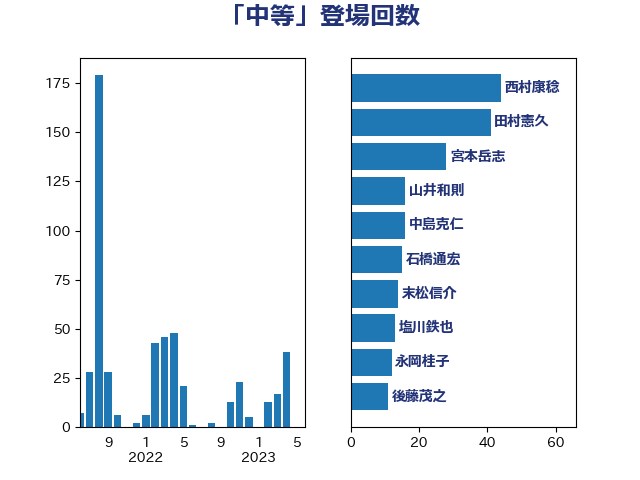

単語「中等」

| 西村康稔 | 自由民主党 | 44 回 |
| 田村憲久 | 自由民主党 | 41 回 |
| 宮本岳志 | 日本共産党 | 28 回 |
| 山井和則 | 立憲民主党 | 16 回 |
| 中島克仁 | 立憲民主党 | 16 回 |
| 石橋通宏 | 立憲民主党 | 15 回 |
| 末松信介 | 自由民主党 | 14 回 |
| 塩川鉄也 | 日本共産党 | 13 回 |
| 永岡桂子 | 自由民主党 | 12 回 |
| 後藤茂之 | 自由民主党 | 11 回 |
| 宮本徹 | 日本共産党 | 11 回 |
| 長妻昭 | 立憲民主党 | 9 回 |
| 義家弘介 | 自由民主党 | 7 回 |
| 宮内秀樹 | 自由民主党 | 7 回 |
| 仁木博文 | 無所属 | 6 回 |
| 田村智子 | 日本共産党 | 5 回 |
| 根本匠 | 自由民主党 | 5 回 |
| 柚木道義 | 立憲民主党 | 5 回 |
| 岸田文雄 | 自由民主党 | 5 回 |
| 小西洋之 | 立憲民主党 | 5 回 |
| 小林茂樹 | 自由民主党 | 5 回 |
| 加藤勝信 | 自由民主党 | 5 回 |
| 鈴木義弘 | 国民民主党 | 4 回 |
| 石田昌宏 | 自由民主党 | 4 回 |
| 浜口誠 | 国民民主党 | 4 回 |
| 森山浩行 | 立憲民主党 | 4 回 |
| 川田龍平 | 立憲民主党 | 4 回 |
| 小沼巧 | 立憲民主党 | 4 回 |
| 大西健介 | 立憲民主党 | 4 回 |
| 城井崇 | 立憲民主党 | 4 回 |
| 齋藤健 | 自由民主党 | 3 回 |
| 阿部弘樹 | 日本維新の会 | 3 回 |
| 熊谷裕人 | 立憲民主党 | 3 回 |
| 山添拓 | 日本共産党 | 3 回 |
| 吉田統彦 | 立憲民主党 | 3 回 |
| 倉林明子 | 日本共産党 | 3 回 |
| 伊佐進一 | 公明党 | 3 回 |
| 世耕弘成 | 自由民主党 | 3 回 |
| 高橋克法 | 自由民主党 | 2 回 |
| 高橋光男 | 公明党 | 2 回 |
| 阿部司 | 日本維新の会 | 2 回 |
| 野田聖子 | 自由民主党 | 2 回 |
| 遠藤敬 | 日本維新の会 | 2 回 |
| 落合貴之 | 立憲民主党 | 2 回 |
| 萩生田光一 | 自由民主党 | 2 回 |
| 舩後靖彦 | れいわ新選組 | 2 回 |
| 簗和生 | 自由民主党 | 2 回 |
| 石垣のりこ | 立憲民主党 | 2 回 |
| 石井苗子 | 日本維新の会 | 2 回 |
| 矢倉克夫 | 公明党 | 2 回 |
| 玉木雄一郎 | 国民民主党 | 2 回 |
| 横山信一 | 公明党 | 2 回 |
| 杉尾秀哉 | 立憲民主党 | 2 回 |
| 岡本あき子 | 立憲民主党 | 2 回 |
| 山際大志郎 | 自由民主党 | 2 回 |
| 山本博司 | 公明党 | 2 回 |
| 尾身朝子 | 自由民主党 | 2 回 |
| 尾崎正直 | 自由民主党 | 2 回 |
| 國重徹 | 公明党 | 2 回 |
| 吉田久美子 | 公明党 | 2 回 |
| 青柳陽一郎 | 立憲民主党 | 1 回 |
| 青柳仁士 | 日本維新の会 | 1 回 |
| 鈴木俊一 | 自由民主党 | 1 回 |
| 道下大樹 | 立憲民主党 | 1 回 |
| 赤池誠章 | 自由民主党 | 1 回 |
| 西銘恒三郎 | 自由民主党 | 1 回 |
| 藤井一博 | 自由民主党 | 1 回 |
| 若松謙維 | 公明党 | 1 回 |
| 臼井正一 | 自由民主党 | 1 回 |
| 竹谷とし子 | 公明党 | 1 回 |
| 稲津久 | 公明党 | 1 回 |
| 福重隆浩 | 公明党 | 1 回 |
| 田村まみ | 国民民主党 | 1 回 |
| 田中健 | 国民民主党 | 1 回 |
| 清水真人 | 自由民主党 | 1 回 |
| 泉健太 | 立憲民主党 | 1 回 |
| 池下卓 | 日本維新の会 | 1 回 |
| 江田憲司 | 立憲民主党 | 1 回 |
| 武部新 | 自由民主党 | 1 回 |
| 森田俊和 | 立憲民主党 | 1 回 |
| 梅谷守 | 立憲民主党 | 1 回 |
| 柴田巧 | 日本維新の会 | 1 回 |
| 柴山昌彦 | 自由民主党 | 1 回 |
| 枝野幸男 | 立憲民主党 | 1 回 |
| 東徹 | 日本維新の会 | 1 回 |
| 新藤義孝 | 自由民主党 | 1 回 |
| 掘井健智 | 日本維新の会 | 1 回 |
| 打越さく良 | 立憲民主党 | 1 回 |
| 庄子賢一 | 公明党 | 1 回 |
| 山田勝彦 | 立憲民主党 | 1 回 |
| 山崎正恭 | 公明党 | 1 回 |
| 小池晃 | 日本共産党 | 1 回 |
| 小林鷹之 | 自由民主党 | 1 回 |
| 小宮山泰子 | 立憲民主党 | 1 回 |
| 小倉將信 | 自由民主党 | 1 回 |
| 大島敦 | 立憲民主党 | 1 回 |
| 堀場幸子 | 日本維新の会 | 1 回 |
| 坂本祐之輔 | 立憲民主党 | 1 回 |
| 吉田とも代 | 日本維新の会 | 1 回 |
| 古川禎久 | 自由民主党 | 1 回 |
| 古屋範子 | 公明党 | 1 回 |
| 加田裕之 | 自由民主党 | 1 回 |
| 前原誠司 | 国民民主党 | 1 回 |
| 佐藤英道 | 公明党 | 1 回 |
| 伊藤孝江 | 公明党 | 1 回 |
| 伊藤孝恵 | 国民民主党 | 1 回 |
| 今井絵理子 | 自由民主党 | 1 回 |
| 三浦信祐 | 公明党 | 1 回 |